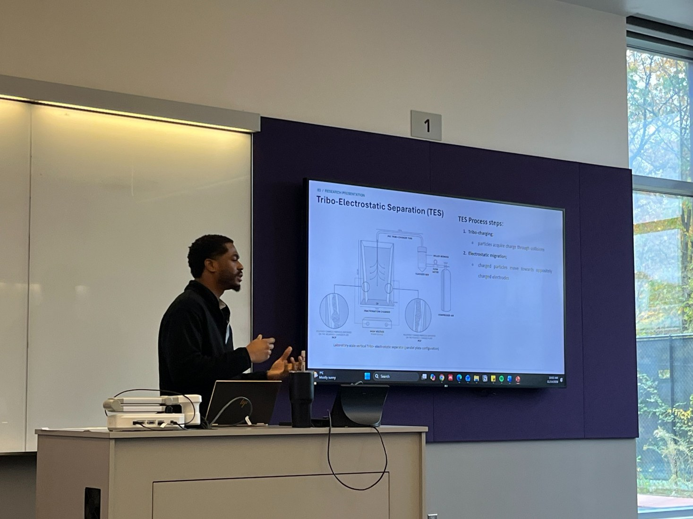

01 / Research
Resource recovery & sustainable materials
I study dry fractionation, particle charging and the recovery of biomass components for downstream applications.
Research portfolio →Howard University · Doctoral researcher
Divinegift J. Chimere, BEng, MEng
I investigate how agricultural residues can be separated and transformed into useful materials, connecting particle-scale phenomena with sustainable process engineering.
01 / Research
I study dry fractionation, particle charging and the recovery of biomass components for downstream applications.
Research portfolio →02 / Teaching
I connect foundational engineering concepts to practical problems through laboratory instruction, mentorship and reflective learning.
Teaching portfolio →03 / Service
I support educational access, professional development and collaborative learning through mentoring and educational program design.
Service portfolio →
Research communication · 2026
I presented ongoing work on the relationship between feedstock composition, triboelectric charging and separation performance. My next steps focus on testing mechanisms and improving selectivity rather than recovery alone.
Research presentations →I welcome conversations about sustainable processing, biomass valorization, engineering education and interdisciplinary research.
Start a conversation